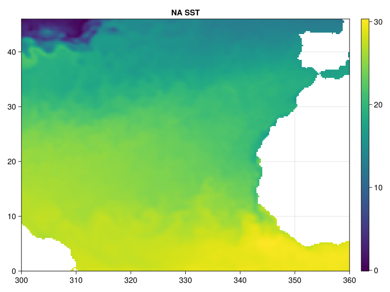
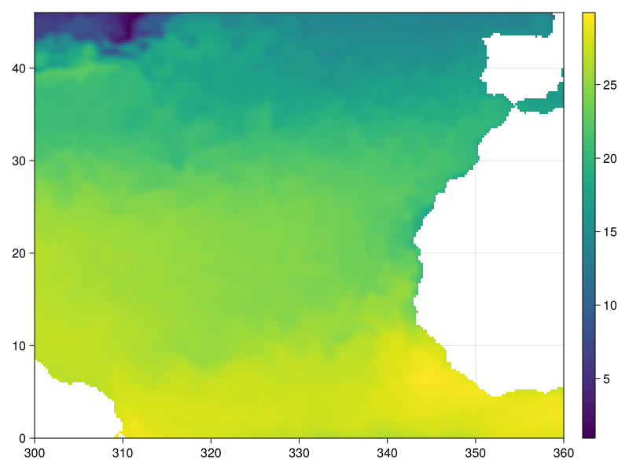
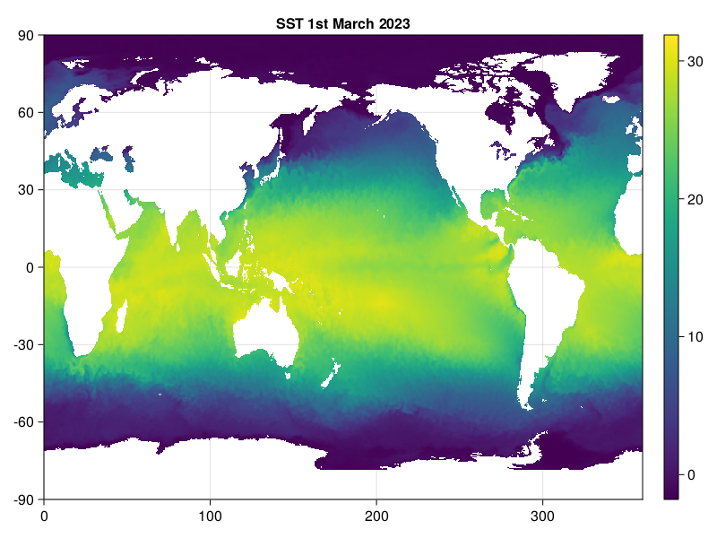
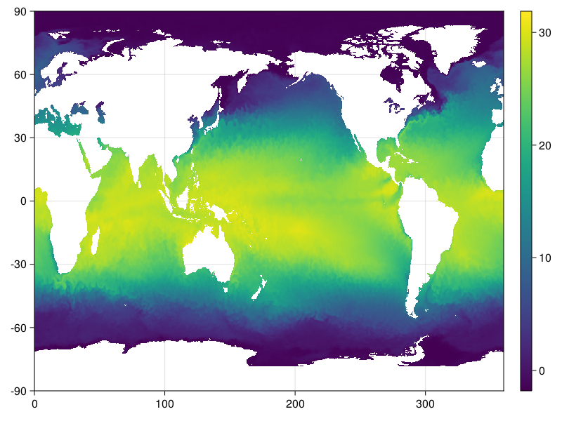
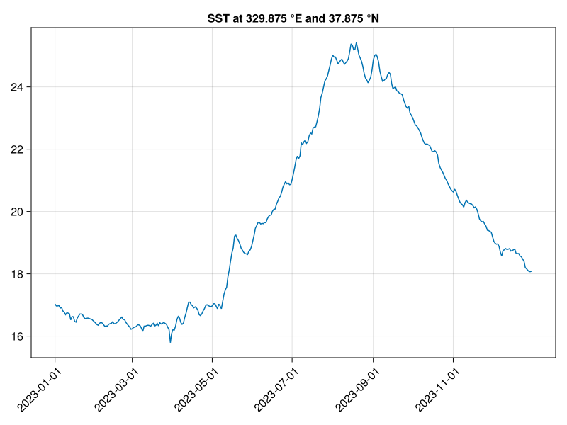
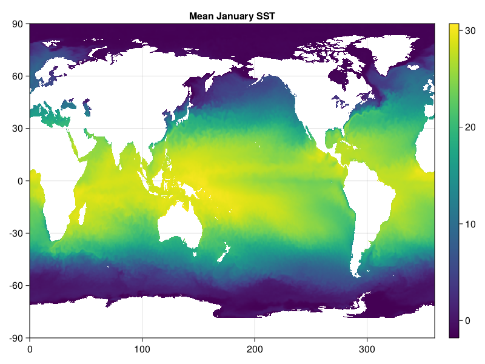
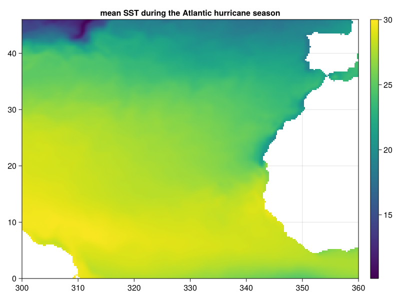
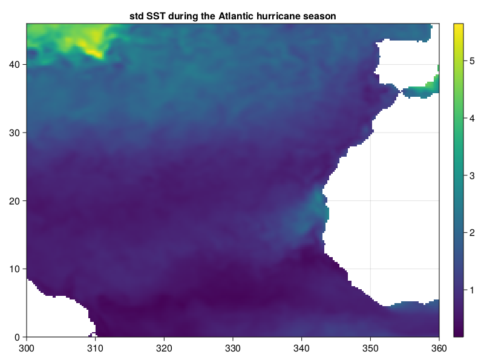
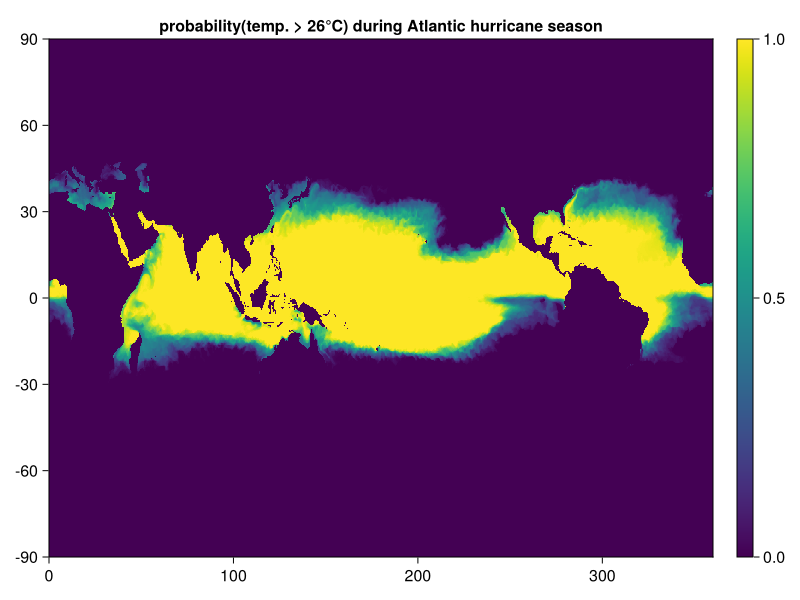

Select, group and reduce data sets with CommonDataModel
As an example we use the NOAA OISST v2 dataset available at: https://psl.noaa.gov/thredds/fileServer/Datasets/noaa.oisst.v2.highres/sst.day.mean.2023.nc
using CommonDataModel: @select, @CF_str, @groupby, groupby
using Dates
using Downloads: download
using CairoMakie # use GLMakie for interactive plots
#using GLMakie
using IntervalSets
using NCDatasets
using StatisticsSome helper functions for plotting with Makie for plotting maps and timeseries.
function nicemaps(v; timeindex = 1, lon = v["lon"][:], lat = v["lat"][:], title = nothing)
fig, ax, hm = heatmap(lon,lat,v[:,:,timeindex],aspect_ratio = 1/cosd(mean(lat)))
if !isnothing(title)
ax.title[] = title
end
Colorbar(fig[1,2],hm)
return fig
end
function nicetimeseries(v::AbstractVector; time = v["time"][:], title = nothing,
timefmt = "yyyy-mm-dd")
fig, ax, ln = lines(Dates.value.(time),v[:])
if !isnothing(title)
ax.title[] = title
end
timeticks = DateTime.(2023,1:2:12,1)
ax.xticks = Dates.value.(timeticks),Dates.format.(timeticks,timefmt)
ax.xticklabelrotation = π/4
return fig
endnicetimeseries (generic function with 1 method)Download the data file (unless already downloaded) The dataset contains the variables lon (longitude), lat (latitude), time and sst (sea surface temperature).
url = "https://psl.noaa.gov/thredds/fileServer/Datasets/noaa.oisst.v2.highres/sst.day.mean.2023.nc"
fname = "sst.day.mean.2023.nc"
if !isfile(fname)
download(url,fname)
end"sst.day.mean.2023.nc"Select a subset by values from coordinate variables
Open the dataset and access the variable sst. Select the domain from 300°E to 360°E and 0°N to 46°N and the closest time instance to the 1 April 2023.
ds = NCDataset(fname)
ncsst = ds["sst"]
ncsst2 = @select(ncsst,300 <= lon <= 360 && 0 <= lat <= 46 && time ≈ DateTime(2023,4,1))
nicemaps(ncsst2, title = "NA SST")
One can also select a subset by indices and by values. Here we load the first time instance and the domain from 300°E to 360°E and 0°N to 46°N
ncsst_first = view(ncsst,:,:,1)
ncsst_na = @select(ncsst_first,300 <= lon <= 360 && 0 <= lat <= 46)
nicemaps(ncsst_na)
Select all data from a given month
ncsst_march = @select(ncsst,Dates.month(time) == 3)
nicemaps(ncsst_march, timeindex = 1, title = "SST 1st March 2023")
Select multiple months using e.g. an interval (from IntervalSets). ∈ can be typed by writing \in directly followed by the TAB key.
ncsst_march_april = @select(ncsst,Dates.month(time) ∈ 3..4)
nicemaps(ncsst_march_april)
Use julia functions to extract data; here the abs function polar regions north of 60°N and south of 60°S
ncsst_polar = @select(ncsst,abs(lat) > 60)
fig, ax, hm = heatmap(ncsst_polar[:,:,1])
ax.title[] = "regions north of 60°N and south of 60°S ($(ncsst_polar[:time][1]))"
Colorbar(fig[1,2],hm)Makie.Colorbar()Extract the time series of the closest point to a given point
ncsst_timeseries = @select(ncsst,lon ≈ 330 && lat ≈ 38)
lon = ncsst_timeseries["lon"][:]
lat = ncsst_timeseries["lat"][:]
nicetimeseries(ncsst_timeseries, title = "SST at $(lon) °E and $(lat) °N")
Extract the time series of the closest point with a specified tolerance If there is no data nearby an empty array is returned
ncsst_outside = @select(ncsst,lon ≈ 330 && lat ≈ 93 ± 0.1)
isempty(ncsst_outside)
size(ncsst_outside)(0, 365)Rather than selecting SST based on coordinates, we can also do the reverse: select the longitude based on SST. Find the longitudes where the SST exceeds 30 at the equator. sst can contain missing values (e.g. on land). coalesce is necessary here to replace the missing values by false in the boolean expression.
ds_equator = @select(ds,lat ≈ 0 && time ≈ DateTime(2023,1,1))
lon_equator = @select(ds_equator,coalesce(sst > 30,false))["lon"]lon (54)
Datatype: Float32
Dimensions: lon
Attributes:
long_name = Longitude
standard_name = longitude
units = degrees_east
actual_range = Float32[0.125, 359.875]
axis = X
The first 3 longitude where SST exceeds 30°C at the equator for 2023-01-01
lon_equator[1:3]3-element Vector{Float32}:
124.125
124.375
124.625Grouping and reducing
With the function groupby and macro @groupby we can group the variable by a given criteria. For each group, we can then apply a reducting function (mean, sum, std, ...).
For example group the SST by month and average per month:
sst_mean = mean(@groupby(ncsst,Dates.Month(time)))sst (1440 × 720 × 12)
Datatype: Union{Missing, Float32}
Dimensions: lon × lat × time
Attributes:
long_name = Daily Sea Surface Temperature
units = degC
valid_range = Float32[-3.0, 45.0]
missing_value = -9.96921e36
precision = 2.0
dataset = NOAA High-resolution Blended Analysis
var_desc = Sea Surface Temperature
level_desc = Surface
statistic = Mean
parent_stat = Individual Observations
actual_range = Float32[-1.8, 36.94]
Instead of using the macro one can also use the function groupby:
sst_mean = mean(groupby(ncsst,:time => Dates.Month))
nicemaps(sst_mean, timeindex = 1, title = "Mean January SST")
Use custom julia function for grouping: The Atlantic hurricane season is the period in a year, from June 1 through November 30, when tropical or subtropical cyclones are most likely to form in the North Atlantic Ocean. The data will be grouped into two cases: false (time outside the Atlantic hurricane season) and true (time is within the Atlantic hurricane season). We plot only the 2nd group.
sst_na = @select(ncsst,300 <= lon <= 360 && 0 <= lat <= 46)
sst_hs = mean(@groupby(sst_na,DateTime(year(time),6,1) <= time <= DateTime(year(time),11,30)))
nicemaps(sst_hs,timeindex = 2, title = "mean SST during the Atlantic hurricane season")
Use a user defined function is_atlantic_hurricane_season without the @groupby macro:
is_atlantic_hurricane_season(time) =
DateTime(year(time),6,1) <= time <= DateTime(year(time),11,30)
sst_std_hs = std(groupby(sst_na,:time => is_atlantic_hurricane_season));
nicemaps(sst_std_hs,timeindex = 2, title = "std SST during the Atlantic hurricane season")
Use a custom aggregation function to estimate the probability that the temperature exceeds 26°C during the Atlantic hurricane season
using CommonDataModel: GroupedVariable
prob_hot(x; dims=:) = mean(coalesce.(x .> 26,false); dims=dims)
prob_hot(gv::GroupedVariable) = reduce(prob_hot,gv)
is_atlantic_hurricane_season(time) =
DateTime(year(time),6,1) <= time <= DateTime(year(time),11,30)
sst_my_mean = prob_hot(groupby(ncsst,:time => is_atlantic_hurricane_season));
nicemaps(sst_my_mean,timeindex=2, title = "probability(temp. > 26°C) during Atlantic hurricane season")